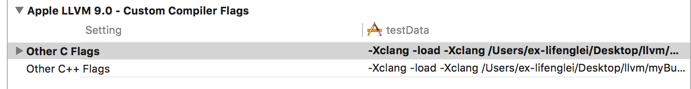
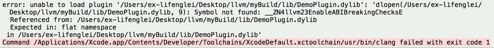
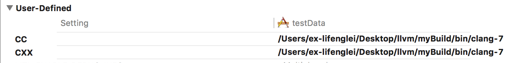
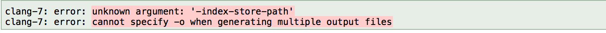
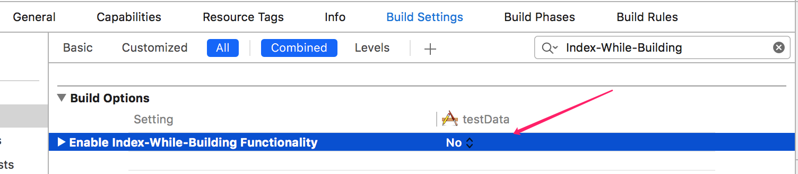
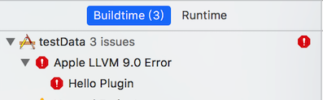
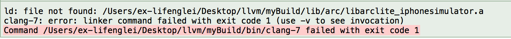
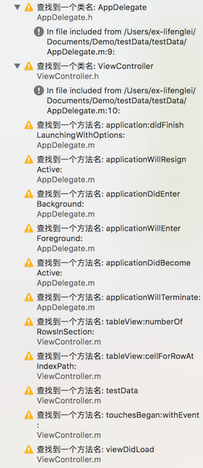

0x01 配置
Clang是LLVM的编译前端，我们的OC、Swift通过Clang经过预处理、词语分析、语法分析，最后生成IR中间码后，交由LLVM进行优化，最后针对不同的平台将IR转换成对应平台的汇编代码。
本篇需要对Clang进行一些定制化，所以我们需要重新编译llvm，步骤如下：
下载源码
cd 需要下载源码的目录
git clone http://llvm.org/git/llvm.git
cd llvm/tools
git clone http://llvm.org/git/clang.git
cd ../projects
git clone http://llvm.org/git/compiler-rt.git
cd ../tools/clang/tools
编译
安装cmake
brew install cmake
编译
- mkdir 新建的目录名 (因为不支持源代码目录内编译)
- cd 新建的目录名
- cmake llvm源代码目录
- cmake –build .
参考链接：http://llvm.org/docs/CMake.html，编译完所有的工具都在编译目录下的bin目录下。
0x02 试玩
我们有代码如下
1 |
|
预处理
经过预处理后的代码会是什么样的？使用Clang命令如下
clang -E main.m
1 |
|
预处理的过程中，导入了头文件，并把宏替换了。
词法分析
词法分析的命令
clang -fsyntax-only -Xclang -dump-tokens main.m
1 | int 'int' [StartOfLine] Loc=<main.m:17:1> |
语法分析
语法分析命令如下
clang -fsyntax-only -Xclang -ast-dump main.m
1 | -FunctionDecl 0x7ff34f2eeae8 <main.m:17:1, line:25:1> line:17:5 main 'int (int, char **)' |
生成IR
IR是作为Clang的输出，llvm的输入，命令如下
clang -S -fobjc-arc -emit-llvm main.m -o main.ll
1 | ; ModuleID = 'main.m' |
其他
生成字节码
clang -emit-llvm -c main.m -o main.bc
生成汇编
clang -S -fobjc-arc main.m -o main.s
生成目标文件
clang -fmodules -c main.m -o main.o
生成可执行文件
clang main.o -o main
0x03 第一个插件
初始化一个插件项目
打开源码路径llvm/tools/clang/example，example目录下新建目录，此例中为DemoPlugin。
接着，修改example目录的CMakeLists.txt文件，添加如下：
1 | add_subdirectory(DemoPlugin) |
来到testPlugin目录，新建如下三个文件
- CMakeLists.txt
- DemoPlugin.exports
- DemoPlugin.cpp
其中CMakeLists.txt内容如下，可以参考example目录下其他例子的CMakeLists.txt内容。
1 | # If we don't need RTTI or EH, there's no reason to export anything |
然后开始最重要的testPlugin.cpp代码编写，
1 |
|
编译，在我们的之前编译源码时新建的目录
cmake
- cmake llvm源代码目录
- cmake –build .
- make DemoPlugin
- 插件出现在lib目录下，DemoPlugin.dylib
Xcode
- cmake -G Xcode .llvm源代码目录 -DCMAKE_BUILD_TYPE:STRING=MinSizeRel
- 打开LLVM.xcodeproj
- 选择Automatically Create Schemes
- 编译clang、DemoPlugin
- 插件出现在Debug/lib目录下，DemoPlugin.dylib
配置Xcode
Xcode的Build Setting里的Other C Flags添加如下，也就是DemoPlugin.dylib所在目录
-Xclang -load -Xclang /Users/ex-lifenglei/Desktop/llvm/myBuild/lib/DemoPlugin.dylib -Xclang -add-plugin -Xclang DemoPlugin

这时，我们build下我们的项目大多数会遇到下面的报错

这是因为Xcode的Clang版本跟我们自己编译的Clang版本不一致。Clang插件需要对应的Clang版本来加载。所以我们还得修改Xcode指定的Clang。在Xcode的Build Setting里新增两个自定义项。
CC = /Users/ex-lifenglei/Desktop/llvm/myBuild/bin/clang-7
CXX = /Users/ex-lifenglei/Desktop/llvm/myBuild/bin/clang-7

然而在Xcode 9版本上，继续报错了，如下

解决办法就是关掉Build Setting里的Index-While-Building

紧接着再次编译，我们成功编译失败，那是当然的，我们本来就设置了一个编译错误提示，说明我们的插件成功运行了！！！

但是，因为这里是error，所以编译终止了，如果上面代码改成Warning让代码继续执行下去的话，可能会遇到下面这个错误

解决方法就是把Xcode程序下的libarclite_iphonesimulator拷贝到编译目录下的../lib/arc下。如果是真机，也是同样的方法把libarclite_iphoneos.a复制过来。
/Applications/Xcode.app/Contents/Developer/Toolchains/XcodeDefault.xctoolchain/usr/lib/arc/libarclite_iphonesimulator.a
我们再做个试验，我们把所有的类名和方法给打出来，代码如下
1 |
|
运行结果如下，我们所有的类名和方法名都被打出来了。
